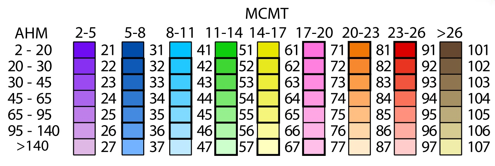

<!doctype html>
<html lang="en">
    <head>
        <meta charset="utf-8">
        <meta http-equiv="X-UA-Compatible" content="IE=edge">
        <meta name="viewport" content="initial-scale=1,user-scalable=no,maximum-scale=1,width=device-width">
        <meta name="mobile-web-app-capable" content="yes">
        <meta name="apple-mobile-web-app-capable" content="yes">
        <link rel="stylesheet" href="css/leaflet.css">
        <link rel="stylesheet" href="css/qgis2web.css"><link rel="stylesheet" href="css/fontawesome-all.min.css">
        <style>
        html, body, #map {
            width: 100%;
            height: 100%;
            padding: 0;
            margin: 0;
        }
        </style>
        <title></title>
    </head>
    <body>
        <div id="map">
        </div>
        <script src="js/qgis2web_expressions.js"></script>
        <script src="js/leaflet.js"></script>
        <script src="js/leaflet.rotatedMarker.js"></script>
        <script src="js/leaflet.pattern.js"></script>
        <script src="js/leaflet-hash.js"></script>
        <script src="js/Autolinker.min.js"></script>
        <script src="js/rbush.min.js"></script>
        <script src="js/labelgun.min.js"></script>
        <script src="js/labels.js"></script>
        <script src="data/CONAFORSeedzones_6.js"></script>
        <script>
        var map = L.map('map', {
            zoomControl:true, maxZoom:28, minZoom:1
        }).fitBounds([[12.644202263495998,-117.87716261228584],[34.651329085286946,-85.96682872068897]]);
        var hash = new L.Hash(map);
        map.attributionControl.setPrefix('</h1><a href="https://link.springer.com/article/10.1007/s11056-017-9620-6"><div align="center">');
        var autolinker = new Autolinker({truncate: {length: 30, location: 'smart'}});
        var bounds_group = new L.featureGroup([]);
        function setBounds() {
        }
        map.createPane('pane_GoogleSatellite_0');
        map.getPane('pane_GoogleSatellite_0').style.zIndex = 400;
        var layer_GoogleSatellite_0 = L.tileLayer('https://mt1.google.com/vt/lyrs=s&x={x}&y={y}&z={z}', {
            pane: 'pane_GoogleSatellite_0',
            opacity: 1.0,
            attribution: '',
            minZoom: 1,
            maxZoom: 28,
        });
        layer_GoogleSatellite_0;
        map.addLayer(layer_GoogleSatellite_0);
        map.createPane('pane_Modelodigitaldeterreno_1');
        map.getPane('pane_Modelodigitaldeterreno_1').style.zIndex = 401;
        var img_Modelodigitaldeterreno_1 = 'data/Modelodigitaldeterreno_1.png';
        var img_bounds_Modelodigitaldeterreno_1 = [[14.531959669999999,-117.124268882],[32.71862615500004,-86.74093585299985]];
        var layer_Modelodigitaldeterreno_1 = new L.imageOverlay(img_Modelodigitaldeterreno_1,
                                              img_bounds_Modelodigitaldeterreno_1,
                                              {pane: 'pane_Modelodigitaldeterreno_1'});
        bounds_group.addLayer(layer_Modelodigitaldeterreno_1);
        map.addLayer(layer_Modelodigitaldeterreno_1);
        map.createPane('pane_SeedzonesMxico2050RCP8_2');
        map.getPane('pane_SeedzonesMxico2050RCP8_2').style.zIndex = 402;
        var img_SeedzonesMxico2050RCP8_2 = 'data/SeedzonesMxico2050RCP8_2.png';
        var img_bounds_SeedzonesMxico2050RCP8_2 = [[14.511292739787102,-117.265351833581],[32.81383042416848,-86.68221085248454]];
        var layer_SeedzonesMxico2050RCP8_2 = new L.imageOverlay(img_SeedzonesMxico2050RCP8_2,
                                              img_bounds_SeedzonesMxico2050RCP8_2,
                                              {pane: 'pane_SeedzonesMxico2050RCP8_2'});
        bounds_group.addLayer(layer_SeedzonesMxico2050RCP8_2);
        map.addLayer(layer_SeedzonesMxico2050RCP8_2);
        map.createPane('pane_SeedzonesMxico2050RCP45_3');
        map.getPane('pane_SeedzonesMxico2050RCP45_3').style.zIndex = 403;
        var img_SeedzonesMxico2050RCP45_3 = 'data/SeedzonesMxico2050RCP45_3.png';
        var img_bounds_SeedzonesMxico2050RCP45_3 = [[14.555680462546398,-117.117392757724],[32.739850886236546,-86.7265985752508]];
        var layer_SeedzonesMxico2050RCP45_3 = new L.imageOverlay(img_SeedzonesMxico2050RCP45_3,
                                              img_bounds_SeedzonesMxico2050RCP45_3,
                                              {pane: 'pane_SeedzonesMxico2050RCP45_3'});
        bounds_group.addLayer(layer_SeedzonesMxico2050RCP45_3);
        map.addLayer(layer_SeedzonesMxico2050RCP45_3);
        map.createPane('pane_SeedzonesMxico19912015_4');
        map.getPane('pane_SeedzonesMxico19912015_4').style.zIndex = 404;
        var img_SeedzonesMxico19912015_4 = 'data/SeedzonesMxico19912015_4.png';
        var img_bounds_SeedzonesMxico19912015_4 = [[14.555680463063002,-117.117392757754],[32.73985088622923,-86.72659857615642]];
        var layer_SeedzonesMxico19912015_4 = new L.imageOverlay(img_SeedzonesMxico19912015_4,
                                              img_bounds_SeedzonesMxico19912015_4,
                                              {pane: 'pane_SeedzonesMxico19912015_4'});
        bounds_group.addLayer(layer_SeedzonesMxico19912015_4);
        map.addLayer(layer_SeedzonesMxico19912015_4);
        map.createPane('pane_SeedzonesMxico19611990_5');
        map.getPane('pane_SeedzonesMxico19611990_5').style.zIndex = 405;
        var img_SeedzonesMxico19611990_5 = 'data/SeedzonesMxico19611990_5.png';
        var img_bounds_SeedzonesMxico19611990_5 = [[14.555680462546398,-117.117392757724],[32.739850886236546,-86.7265985752508]];
        var layer_SeedzonesMxico19611990_5 = new L.imageOverlay(img_SeedzonesMxico19611990_5,
                                              img_bounds_SeedzonesMxico19611990_5,
                                              {pane: 'pane_SeedzonesMxico19611990_5'});
        bounds_group.addLayer(layer_SeedzonesMxico19611990_5);
        map.addLayer(layer_SeedzonesMxico19611990_5);
        function pop_CONAFORSeedzones_6(feature, layer) {
            var popupContent = '<table>\
                    <tr>\
                        <th scope="row">ZMG</th>\
                        <td>' + (feature.properties['ZMG'] !== null ? autolinker.link(feature.properties['ZMG'].toLocaleString()) : '') + '</td>\
                    </tr>\
                </table>';
            layer.bindPopup(popupContent, {maxHeight: 400});
        }

        function style_CONAFORSeedzones_6_0() {
            return {
                pane: 'pane_CONAFORSeedzones_6',
                opacity: 1,
                color: 'rgba(0,0,0,1.0)',
                dashArray: '',
                lineCap: 'butt',
                lineJoin: 'miter',
                weight: 1.0, 
                fillOpacity: 0,
                interactive: true,
            }
        }
        map.createPane('pane_CONAFORSeedzones_6');
        map.getPane('pane_CONAFORSeedzones_6').style.zIndex = 406;
        map.getPane('pane_CONAFORSeedzones_6').style['mix-blend-mode'] = 'normal';
        var layer_CONAFORSeedzones_6 = new L.geoJson(json_CONAFORSeedzones_6, {
            attribution: '',
            interactive: true,
            dataVar: 'json_CONAFORSeedzones_6',
            layerName: 'layer_CONAFORSeedzones_6',
            pane: 'pane_CONAFORSeedzones_6',
            onEachFeature: pop_CONAFORSeedzones_6,
            style: style_CONAFORSeedzones_6_0,
        });
        bounds_group.addLayer(layer_CONAFORSeedzones_6);
        map.addLayer(layer_CONAFORSeedzones_6);
        var baseMaps = {};
        L.control.layers(baseMaps,{' CONAFOR Seedzones': layer_CONAFORSeedzones_6,"Seedzones México 1961-1990": layer_SeedzonesMxico19611990_5,"Seedzones México 1991-2015": layer_SeedzonesMxico19912015_4,"Seedzones México 2050 RCP 4.5": layer_SeedzonesMxico2050RCP45_3,"Seedzones México 2050 RCP 8": layer_SeedzonesMxico2050RCP8_2,"Modelo digital de terreno": layer_Modelodigitaldeterreno_1,"Google Satellite": layer_GoogleSatellite_0,},{collapsed:false}).addTo(map);
        setBounds();
        L.ImageOverlay.include({
            getBounds: function () {
                return this._bounds;
            }
        });
        </script>
    </body>
</html>
